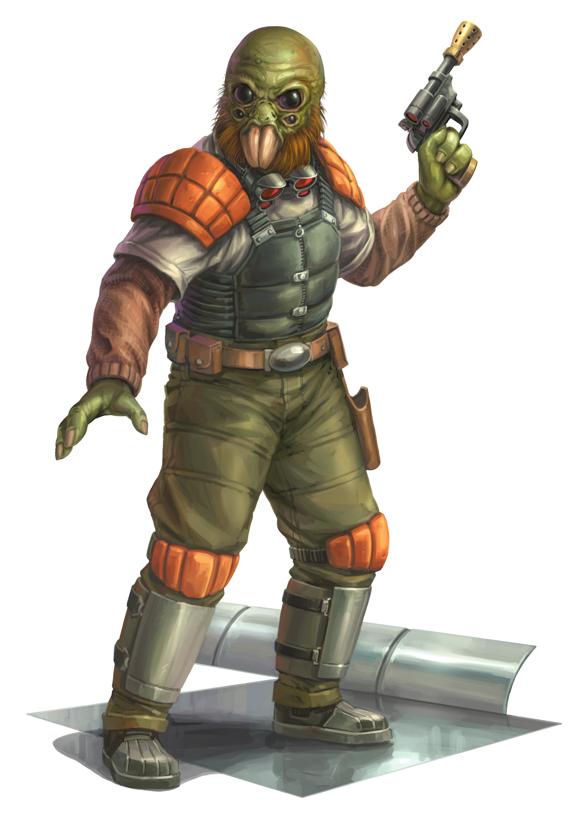

Aqualish
aqualish
Special Abilities: All Aqualish are capable of breathing underwater. In addition, they begin the game with one rank in Brawl. Characters cannot train Brawl above rank 2 during character creation.
Sub-Species Options: A player choosing to play an Aqualish character must choose one of the following sub-species. No matter which subspecies is chosen, no skills may be trained above rank 2 during character creation.
-
Aquala: Aquala begin the game with one rank in Resilience. Furthermore, Aquala may remove imposed due to any cold or wet conditions.
-
Ualaq: Ualaq begin the game with one rank in Survival or one rank in Perception. Furthermore, Ualaq may remove imposed due to dark conditions, but suffer to Perception checks in brightly lit environments.
-
Quara: Quara begin the game with one rank in Athletics or one rank in Coercion. Furthermore, Quara may remove when attempting to track anything through a natural environment.
The Aqualish are a triad of semi-aquatic sub-species evolved from aquatic mammals on the planet Ando. Considered one of the most aggressive and contentious species in the galaxy, the Aqualish have found themselves at the center of galactic division and discord since their first contact with other species.
The three sub-species diverged in their evolution thousands of years ago, resulting in three related races sharing the single water planet. All three subspecies appear similar, featuring two enormous downward-thrusting tusks, a skin color ranging from green to blue, and fringes of wiry hair along their jawlines and the backs of their heads. However, there are also considerable differences that figure prominently in how each sub-species is perceived offworld.
Each of the three sub-species of the Aqualish stands roughly a meter and a half tall. All three possess bulky bodies, with the Aquala's being further distended with a healthy layer of insulating fat. However, most Aquala spend their entire lives on Ando, seldom if ever leaving their homeworld.
Both the Ualaq and the Quara are far more likely to be seen off-world, since their hands are better suited to using the technology of other species. The Quara have a reputation for being thugs and criminals, while most of the Ualaq have moved offworld to avoid persecution by the Aquala.
The facial features of all three Aqualish sub-species combine elements of arachnid and aquatic mammal evolution. The placement of their tusks is often reminiscent to most sentients of the mandibles of a giant spider, aggravated by the thick fringe of wiry brown or black hair and their black, pupil-less eyes. The skin's rubbery consistency and rough texture, meanwhile, recall the hides of a variety of aquatic mammals. Because of the close placement of their two sets of eyes, the Ualaq are the most arachnid in appearance.
The three sub-species of the Aqualish have a long history of antagonism towards each other. Once they secured hyperdrive technology, combat amongst them nearly ceased as they extended their violent tendencies to their galactic neighbors.
The Aquala are by far the most numerous of the sub-species on Ando. The Quara are the least numerous and most aggressive. In fact, more Quara live elsewhere in the galaxy than on their homeworld. The Aquala blame the Quara for the Aqualish's galactic reputation as thugs and persecute them mercilessly, contributing to the cycle of Quara emigration.
All Aqualish culture is centered on belligerence and strength, and violent physical confrontations are common in almost all forms of interaction. Because of this focus on brutality and conflict, the subtlety and restraint required in negotiation are not among their most common attributes, making it hard for any outsider to interact with them diplomatically.
The Aqualish are not adept at designing and developing technology and instead tend to slap together bits and pieces of other species' equipment in a less-than-efficient manner. Because of this, the Aqualish are often seen as scavengers, adding to their unsavory reputation throughout the galaxy.
Due to their innate aggression, most individuals from all three Aqualish sub-species are natural bullies, tending to challenge any new acquaintance with confrontational behavior meant to test their strength and resolve. Any perceived weakness is met with continued persecution.
The Aqualish sub-species hail from the aquatic world Ando, located in the Lambda sector in the galactic south-east along the Corellian Run. The planet is almost entirely covered in oceans, with what little dry land there is given over to swamps, rain forests, and rocky projections featuring deep, wet caves. These small land masses are generally shrouded in steam and fog all year long.
Ando's capital city, Quantill City, mirrors the division of the planet and indeed the species as a whole. The city is divided into Aquala and Quara districts, while the Ualaq are nearly unrepresented. Quantill City is home to the planet's primary spaceport as well as the Imperial legation.
All three Aqualish sub-species speak similar dialects of the language that scholars know simply as Aqualish. However, it is nearly impossible for other sentients to speak this language due to the Aqualish's massive tusks, and thus most off-world Aqualish are fluent in Galactic Basic as well.
Due to the construction of Aqualish vocal cords and the limitations imposed by their over-hanging tusks, it is impossible for Aqualish to speak in Basic without it sounding abrasive and harsh. This only serves to further the perception of the Aqualish as brutish louts.
Because of their belligerent nature, most Aqualish who venture offworld gravitate towards occupations where violence and antisocial tendencies are considered strengths rather than flaws. Having been bullies all their lives, they transition easily into a life of criminal viciousness. Most have either been forced to leave Ando against their will or fled the persecution by the other sub-species, and as such are disinclined to see the galaxy in a positive light.
Members of the Quara sub-species are most common on the fringe, and travelers frequently encounter them working as bounty hunters or hired guns. Their lack of interpersonal communication skills means that few rise to positions of authority in wider organizations. Those who do, however, are brutally resourceful and ruthlessly efficient.
In the earliest days of the Republic, the planet Ando was being ravaged by a vicious war among the Aqualish races. This war threatened to destroy the planet's fragile ecosystems. Without outside interference, Ando and everything on it would be doomed.
In the midst of this apocalyptic struggle, a spaceship descended from the heavens. Legends are unclear as to the identity of these newcomers. Some say they were Corellian merchants, others say Duro colonists. What is abundantly clear, however, is that they were sadly unprepared for what awaited them on the planet below.
In a spasm of fear and aggression, the Aqualish banded together and fell upon the spaceship and its occupants, slaughtering them all mercilessly. Representatives of the three sub-species gathered at the site of the massacre in the bloody aftermath and looked upon the undamaged spaceship. After a hasty truce, the Aqualish began studying the vehicle, learning its systems, and reverse-engineering them. It was not long before this bellicose species possessed hyperdrive technology of its own.
The first stop for the Aqualish was a nearby planet, which they systematically stripped and rendered uninhabitable. From there, the Aqualish travelled into the wider galaxy where they eventually encountered the Republic, firing upon their ships without warning. Fortunately for the galaxy, however, the Republic ships proved more than a match for the Aqualish. After a short and one-sided war, the Republic disarmed Ando and all of its hyperspace- capable vessels, forcing it to submit to Republic oversight and guidance.